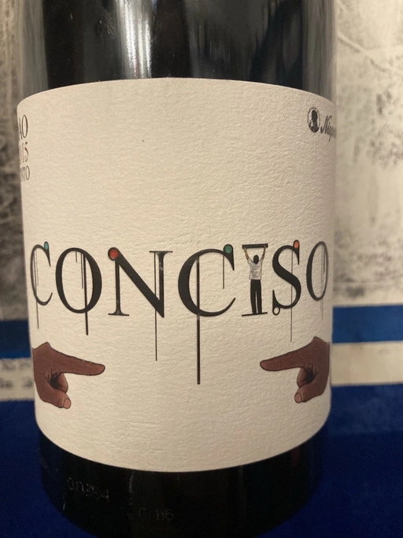

- Type
- Red Still, Dry
- Producer
- Niepoort Vinhos S.A.
- Vintage
- 2015
- Location
- Portugal, Dão DOC
- Grapes
- Baga, Mencía
- Alcohol
- 12
- Sugar
- NA
- Price
- 1059 UAH
- Cellar
- N/A
Ratings
2021-10-27 - 7.25
Blend of Baga and Jaen do Dão (aka Mencía). Intense bouquet full of ripe and even slightly dried black berries with coffee and spices. Medium-high tannin, medium acidity and long aftertaste with flavours of sweet cherry. Interesting wine, though tannin is kind of out of place.